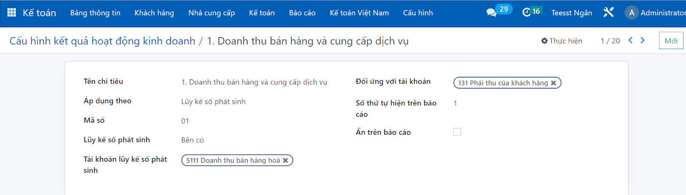
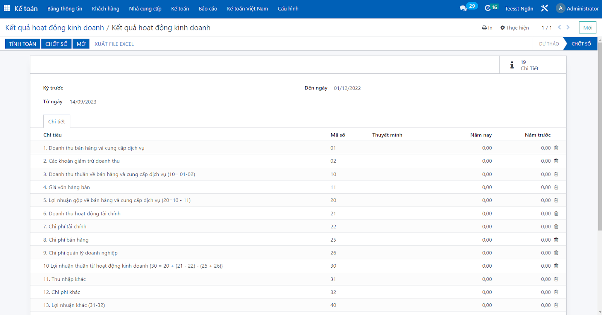
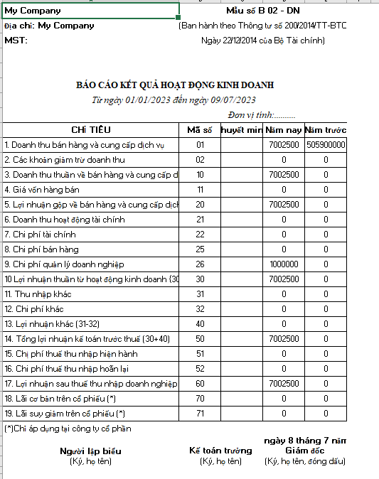

Users will self-regulate the criteria needed in the report.
The indicator information will be the basis for the system to perform statistics and produce reporting results.
With the configured criteria, the system will calculate and produce reports automatically based on them.
At here users can do it Automatically calculate business performance results according to targets Closing the results report book

The report on business operations results when rendered will be presented according to form B02-DN, Circular 200 of Vietnamese accounting.
